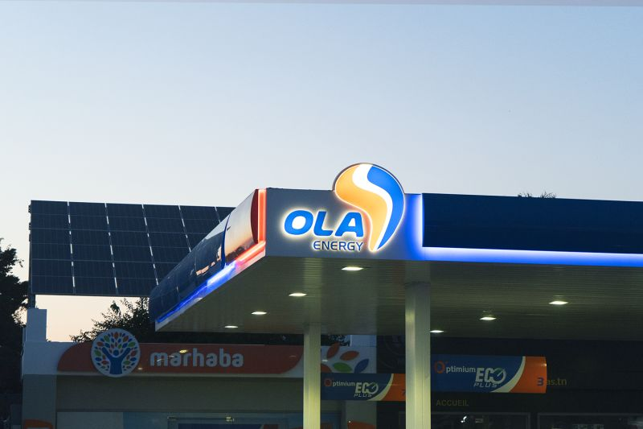

Accélérer le progrès : OLA Energy renforce sa
présence en Afrique et en Libye
Institutionnel 2026


Faire progresser le développement : OLA Energy
s’étend à travers l’Afrique et investit dans l’avenir de
la Libye
Sur un parcours jalonné de réalisations tout au long de 2025, OLA
Energy a continué de
renforcer sa présence à travers le continent africain, réaffirmant
sa position comme l’une
des réussites libyennes les plus emblématiques sur la scène
internationale.
Depuis le début de l’année, l’entreprise a retrouvé sa flexibilité
opérationnelle
internationale, rétablissant sa pleine capacité à évoluer librement
sur les marchés
mondiaux et ouvrant de nouveaux horizons pour de futurs partenariats
et
investissements.
Au Kenya, OLA Energy a renforcé son partenariat stratégique avec
Isuzu East Africa
afin de développer et de commercialiser Maxit Lubricants en Afrique
de l’Est. Cette
collaboration, entamée en 2001, a connu une croissance continue,
avec une expansion
supplémentaire attendue en 2025. Les produits Maxit couvrent
désormais une large
gamme comprenant des huiles moteur, des huiles de transmission, des
huiles
hydrauliques et des graisses—conçues pour répondre aux besoins des
véhicules légers
et lourds, des autobus et des camions.
En Côte d’Ivoire, OLA Energy a inauguré la nouvelle station-service
AKOUEDO dans
une zone résidentielle en rapide croissance
d’Abidjan, rapprochant ses services
essentiels des communautés locales. La station propose des
carburants, des lubrifiants
et du gaz de haute qualité, ainsi que des services modernes de
vidange et de lavage
automobile, offrant une expérience client supérieure. Cette
initiative reflète
l’investissement de l’entreprise dans des
emplacements stratégiques qui répondent aux
besoins des
clients tout en soutenant une mobilité urbaine durable.
En Tunisie, le gouverneur de Sousse a présidé le lancement des
travaux de construction
de deux nouvelles stations-service à
Sidi Bouali le long de l’autoroute A1, sous la
supervision d’OLA Energy. Le projet devrait être achevé début 2026
afin de fournir tous
les services nécessaires aux usagers de
l’autoroute, conformément aux normes
internationales les plus
élevées.
OLA Energy a également été très présente au Salon international de
l’automobile
d’Abidjan, qui a attiré plus de 20 000 visiteurs et a offert une
occasion précieuse de
mettre en valeur la marque et de renforcer l’engagement direct avec
les
consommateurs.
Parallèlement à son expansion à travers l’Afrique, OLA Energy a
continué de consolider
ses racines en Libye en acquérant une
participation dans la Libya Oil Company, en
signant un accord avec Brega Petroleum Marketing Company pour mettre
en
œuvre des projets d’investissement, et en concluant un
accord conjoint avec la zone
franche de Misurata et Brega pour lancer un projet stratégique de
mélange de
lubrifiants, reflétant l’engagement de l’entreprise
à investir sur le marché intérieur tout
en poursuivant sa
croissance externe.
Avec cette dynamique, OLA Energy poursuit son parcours à travers
l’Afrique et la
Libye, guidée par trois piliers principaux : la croissance,
l’amélioration de
l’efficacité et le service à la communauté, consolidant ainsi sa
position de réussite
libyenne de premier plan et couronnée de succès.